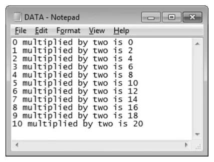

To write data to the memory card, connect your shield, insert a microSD card, and then enter and upload the following sketch:
// Project 29 - Writing Data to the Memory Card
int b = 0;
#include <SD.h>
void setup()
{
Serial.begin(9600);
Serial.print("Initializing SD card...");
pinMode(10, OUTPUT);
// check that the microSD card exists and is usable
if (!SD.begin(8))
{
Serial.println("Card failed, or not present");
// stop sketch
return;
}
Serial.println("microSD card is ready");
}
void loop()
{
❶ // create the file for writing
File dataFile = SD.open("DATA.TXT", FILE_WRITE);
// if the file is ready, write to it:
if (dataFile)
❷ {
for ( int a = 0 ; a < 11 ; a++ )
{
dataFile.print(a);
dataFile.print(" multiplied by two is ");
b = a * 2;
❸ dataFile.println(b, DEC);
❹ }
❺ dataFile.close(); // close the file once the system has finished with it
// (mandatory)
}
// if the file isn't ready, show an error:
else
{
Serial.println("error opening DATA.TXT");
❻ }
Serial.println("finished");
do {} while (1);
}The sketch creates a text file called DATA.txt on the microSD card, as shown in Figure 8-25.

Let’s review the void loop() section of the sketch to see how it created the text file. The code in void loop() between ❶ and ❷ and between ❹ and ❻ creates and opens the file for writing. To write text to the file, we use this:
dataFile.print(); or dataFile.println();This code works in the same manner as, for example, Serial.println(), so you can write it in the same manner as you would to the Serial Monitor. At ❶, we can set the name of the created text file, which must be eight characters, followed by a dot, and then three characters, such as DATA.txt.
At ❸, we use DEC as the second parameter. This states that the variable is a decimal number and should be written to the text file as such. If we were writing a float variable instead, then we would use a digit for the number of decimal places to write (to a maximum of six).
When finished writing data to the file, at ❺, we use dataFile.close() to close the file for writing. If this step is not followed, the computer will not be able to read the created text file.